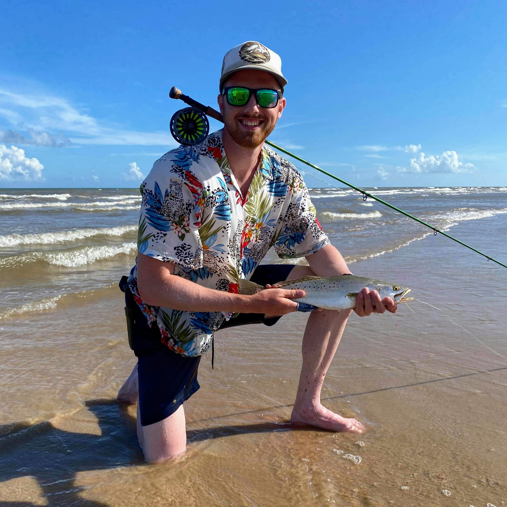

<link rel="stylesheet" href="https://cdnjs.cloudflare.com/ajax/libs/font-awesome/4.7.0/css/font-awesome.min.css">
<section class="section about-section" id="about">
    <div class="container">
        <div class="row align-items-center justify-content-around flex-row-reverse">
            <div class="col-lg-6">
                <div class="about-text text-center">
                    <p>I'm a Junior Software Developer. I write in Java, Python, and TypeScript, and have built full-stack applications in Spring/Angular. I'm currently a student in CookSystems FastTrack program, and developing proficiency in full-stack development.</p>
                    <p>In my free time, I'm fly fishing, playing piano, reading, or finding adventure outside.</p>
                    <div class="btn-bar">
                        <a class="fa fa-github" href="https://github.com/dannyc12" target="_blank"></a>
                        <a class="fa fa-linkedin" href="https://www.linkedin.com/in/danny-clynes-6a52a24a/" target="_blank"></a>
                        <a class="fa fa-instagram" href="https://www.instagram.com/roads.to.ridges/" target="_blank"></a>
                        <a class="fa fa-youtube" href="https://www.youtube.com/@freestonegear4551" target="_blank"></a>
                        <a class="fa fa-wordpress" href="https://roadstoridges.wordpress.com/" target="_blank"></a>
                        
                    </div>
                </div>
            </div>
            <div class="col-lg-5 text-center">
                <div>
                    
                </div>
            </div>
        </div>
    </div>
</section>